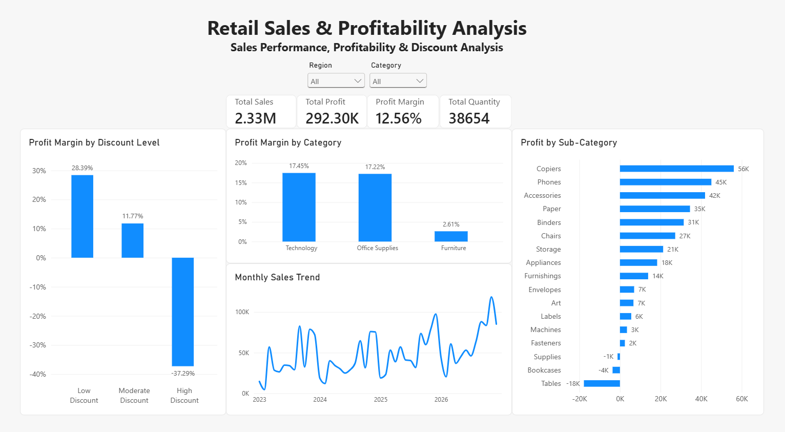

Project Overview
This project analyzes 10,194 retail transactions representing over $2.3 million in sales. The objective was to identify profitable and unprofitable areas of the business, investigate discounting patterns, and develop recommendations for improving financial performance.
Power BI Dashboard

Key Findings
- Total sales reached $2.33 million, generating approximately $292,297 in profit.
- Furniture had the lowest profit margin at 2.61%, with Tables generating approximately $17,753 in losses.
- Transactions discounted 30% or more collectively produced a -37.29% profit margin.
- Technology was the most profitable category, generating approximately $146,543 in profit.
- Sales showed strong seasonal patterns, with November producing the highest average monthly sales.
Business Recommendations
- Review underperforming Furniture products, particularly Tables and Bookcases.
- Evaluate the use of discounts of 30% or more to reduce profitability risk.
- Investigate severely unprofitable Technology products before making category-wide pricing changes.
- Monitor profit margins alongside revenue when evaluating business performance.
Project Repository
Explore the complete SQL analysis, Python notebook, Power BI dashboard, and project documentation on GitHub.
View Full Project on GitHub →